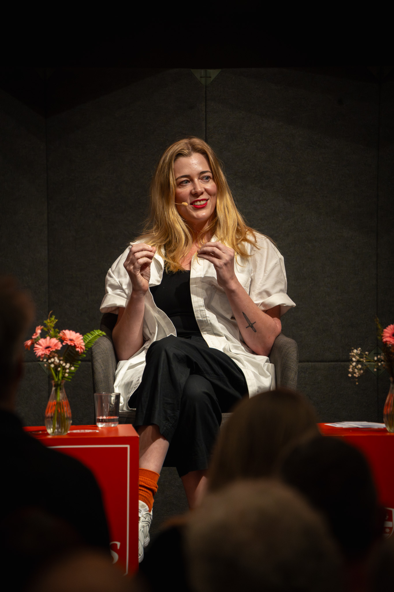

Visual Artist — Painting & Sculpture
Works exploring materiality, memory, and the thresholds between the tangible and the ephemeral.
ScrollSelected Works
Sediment I
Threshold
Drift II
After the Rain
Still Ground
Vessel No. 4
Sediment II

Studio, Sydney — 2024
About
Shari O'Dwyer is a Sydney-based visual artist whose practice spans painting, sculpture, and mixed-media installation. Her work investigates the material traces of experience — how memory, landscape, and the body leave marks on objects and surfaces.
Drawing on both European painterly traditions and the textures of the Australian environment, O'Dwyer's paintings are built through layered processes of application and erasure. Her sculptural work often incorporates found and natural materials, testing the boundary between the made and the found.
O'Dwyer holds a Bachelor of Fine Arts (First Class Honours) from the National Art School, Sydney, and a Master of Fine Arts from the Royal College of Art, London. Her work has been exhibited across Australia, the United Kingdom, and Europe.
Based in
Sydney, Australia
Education
RCA, London / NAS, Sydney
Practice
Painting & Sculpture
Represented by
Available on inquiry
Exhibitions
For studio visits, commissions, exhibition inquiries, or press, please get in touch.